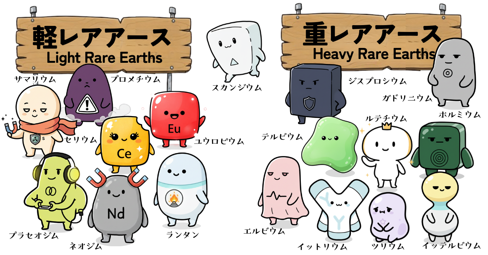

「軽」と「重」の違いを知ろう！
レアアース元素の仲間たちは「軽レアアース」と「重レアアース」という大きなグループに分けられます。重いほど希少価値が高まる傾向にあります。

※イラスト：レアアース一族の分類イメージ
分類 軽レアアース
メンバー
ランタン(La), セリウム(Ce), プラセオジム(Pr), ネオジム(Nd), プロメチウム(Pm), サマリウム(Sm), ユウロピウム(Eu)
主な特徴と活躍
比較的埋蔵量が多く（※プロメチウムを除く）、私たちの生活を支える働き者。EVモーター（Nd）や液晶の研磨剤などで活躍中！
分類 重レアアース
メンバー
ガドリニウム(Gd), テルビウム(Tb), ジスプロシウム(Dy), ホルミウム(Ho), エルビウム(Er), ツリウム(Tm), イッテルビウム(Yb), ルテチウム(Lu) + イットリウム(Y)
主な特徴と活躍
希少性が極めて高く、エリート揃い。高性能磁石（Dy）やジェットエンジンの耐火材など、産業の最前線を支える「最後の砦」。
💡ちょっと豆知識
イラストの中央、どちらの看板にも属さず描かれているスカンジウム（Sc）は、実は分類上どちらにも含まれない「特別な存在」です。
レアアース一族の一員でありながら、どこにも属さない孤高のポジション……そんな彼のキャラクター性にも注目してみてくださいね。